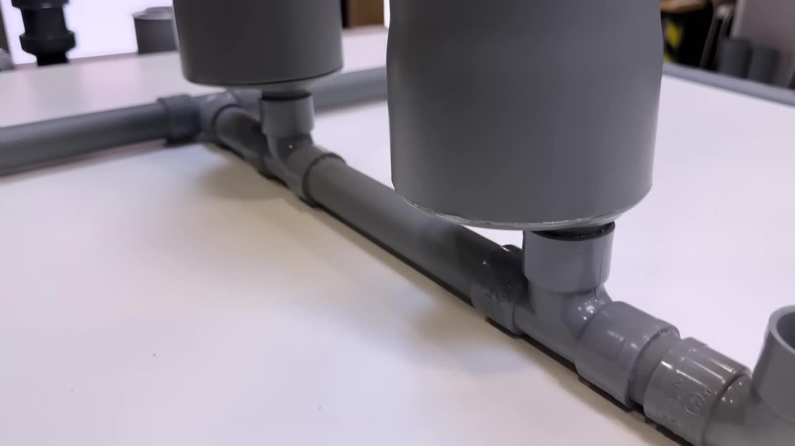
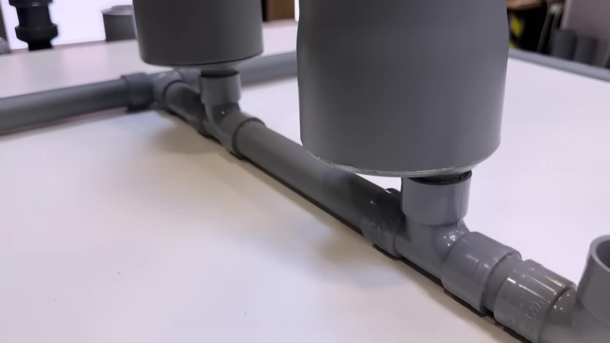
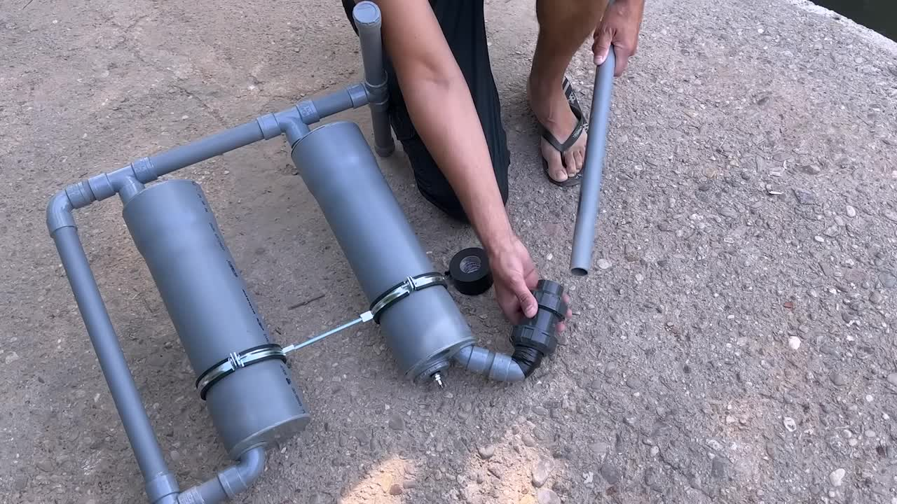

💡 如何制造一个无需外部能源的“永动”水泵？
How to build a self-sustaining "perpetual motion" water pump without external energy.
核心特点 / Core Features
无需电力 / No Electricity Needed
Completely off-grid, relying solely on natural physical principles.
自循环压力回路 / Hydro-Cycling Pressure Loop™
A self-sustaining system leveraging innovative hydro-pneumatic cycles.
高效水利用 / Efficient Water Utilization
Transforms pneumatic energy into hydraulic flow, maximizing water output.
物理原理驱动 / Physics-Driven Operation
Utilizes Venturi effect, Boyle-Mariotte Law, and controlled cavitation.
制作步骤 / Production Steps
第一步：切割与扩口 / Cutting & Expanding PVC Pipes
首先，我们需要准备好PVC管材，并根据尺寸要求进行精确切割和扩口，以确保后续组装的紧密性。
First, prepare the PVC pipes, precisely cut them according to dimensions, and expand their ends for tight assembly.
- 主水箱管 (2根)：直径 Ø110mm x 长400mm / Main Tanks (2 tubes): Ø110x400mm
- 辅助管 (2根)：直径 Ø32mm x 长210mm / Auxiliary Pipes (2 tubes): Ø32x210mm
- 基础支架管 (多根)：直径 Ø32mm，长度不同 / Base Support Pipes (various): Ø32mm, varying lengths
- T型接头 (多用)：直径 Ø32mm / T-Joints (multiple uses): Ø32mm
- 弯头 (多用)：直径 Ø32mm，90度或45度 / Elbows (multiple uses): Ø32mm, 90° or 45°
- 螺纹盖 (1个)：直径 Ø50mm / Threaded Cap (1 unit): Ø50mm
- 异径接头/盖 (多个)：将 Ø40mm 缩小到 Ø32mm / Reducing Couplers/Caps (multiple): Ø40mm to Ø32mm
利用喷灯加热PVC管的末端，使其软化后，可以插入尺寸略大的管子或盖子进行扩口定型。
Use a blowtorch to heat the ends of the PVC pipes, softening them, then insert slightly larger pipes or caps to expand and shape them.
第二步：制作水龙头连接 / Faucet Connection Assembly
将1英寸转1-1/4英寸的黄铜接头加热后，熔接到直径32毫米的PVC T型接头内。待冷却后，旋入水龙头。
Heat the 1-inch to 1-1/4-inch brass fitting and melt it into the Ø32mm PVC T-joint. Once cooled, screw in the faucet.
- 接头：1英寸转1-1/4英寸的黄铜接头 / Fitting: 1" to 1-1/4" brass fitting
- T型接头：直径 Ø32mm / T-joint: Ø32mm
- 水龙头：标准花园水龙头 / Faucet: Standard garden faucet
第三步：胶合水箱与底座 / Gluing Tanks & Base Structure
使用高压PVC胶水将所有管材和接头胶合在一起。确保所有连接处密封严密，以防漏气漏水。
Use high-pressure PVC adhesive to glue all pipes and fittings together. Ensure all connections are tightly sealed to prevent leaks.
- 胶水：高压PVC专用胶水 / Adhesive: High-pressure PVC specialized adhesive
- 盖子：带有小孔的盖子，用于连接 Ø32mm 管 / Caps: Caps with small holes for Ø32mm pipe connections
- 固定夹具：用于固定主水箱的金属夹具 / Clamps: Metal clamps for securing main tanks
 

第四步：安装阀门与进水口 / Valve & Inlet Installation
将一个汽车轮胎气门嘴安装在其中一个水箱的螺纹盖上，用于注入压缩空气。进水管末端连接一个止回阀。
Install a car tire valve on one of the tank's threaded caps for compressed air injection. Attach a non-return valve to the end of the water intake pipe.
- 气门嘴：汽车轮胎气门嘴 / Valve: Car tire valve
- 止回阀：确保水流方向正确，防止回流 / Check Valve: Ensures correct water flow direction, prevents backflow
- 进水管：用于吸取水源的管子 / Intake Pipe: Pipe used to draw water from the source
工作原理 / Operating Principle
该系统基于能量平衡原理，通过控制气动循环将压缩空气的能量转化为水流。
The system operates on the principle of energy balance, converting the energy of compressed air into hydraulic flow through a controlled pneumatic cycle.
初始准备 / Initial Setup:
首先，将整个闭合回路注满水，并关闭水龙头和气门嘴。然后，通过气门嘴向系统注入少量压缩空气，形成一个“隐形活塞”。
Initially, fill the entire closed circuit with water, then close the faucet and valve. Inject a small amount of compressed air into the system via the valve, creating an "invisible piston."
文丘里效应与伯努利定律 / Venturi Effect & Bernoulli's Law:
当水龙头被打开时，水开始流出。水流在水龙头出水口处产生的节流效应，根据文丘里效应，会加速水流，同时降低该区域的压力。
When the faucet is opened, water starts to flow out. The constriction at the faucet outlet, according to the Venturi effect, accelerates the water flow while lowering the pressure in that area.
- 文丘里效应 (Venturi Effect)：当流体通过收缩的管道时，流速增加，压力降低。/ When a fluid flows through a constricted pipe, its velocity increases, and its pressure decreases.
持续吸水与做功 / Continuous Suction & Work:
这个低压区域在进水管一端产生吸力，使系统无需外部机械辅助即可从河流或水坝中吸收水流。同时，根据玻意耳-马略特定律 (Boyle-Mariotte Law)，压缩空气在膨胀过程中将其能量传递给水柱。
This low-pressure zone creates suction at the intake, allowing the system to draw water from a river or dam without external mechanical assistance. Simultaneously, according to the Boyle-Mariotte Law, compressed air transfers its energy to the liquid column as it expands.
P × V = 常数 / P × V = constant
- Q：泵送水的有用流量 [m³/s] / Q: Useful flow rate of pumped water [m³/s]
- Pair：压缩空气的绝对压力 [Pa] / Pair: Absolute pressure of compressed air [Pa]
- Vair：注入空气的体积 [m³] / Vair: Volume of injected air [m³]
- ρ：水的密度 (~1000 kg/m³) / ρ: Density of water (~1000 kg/m³)
- g：重力加速度 (~9.81 m/s²) / g: Gravitational acceleration (~9.81 m/s²)
- helev：泵送扬程 [m] / helev: Pumping elevation head [m]
- Δhlosses：摩擦和湍流导致的扬程损失 [m] / Δhlosses: Head losses due to friction and turbulence [m]
- ηcycle：气动循环效率 (0.2 – 0.7，取决于设计) / ηcycle: Efficiency of the hydropneumatic cycle (0.2 – 0.7 depending on design)

只要水龙头保持开启，这个循环就会持续进行。一旦水龙头完全关闭，系统将失去其吸力，气压将趋于稳定。此时需要重新注入压缩空气来重启循环。
This cycle continues as long as the faucet remains open. Once the faucet is completely closed, the system loses its absorption momentum, and the air pressure stabilizes. In that case, it will be necessary to inject compressed air again to restart the cycle.
分享此教程，加入能源革新！
Share this guide and join the energy revolution!
我们的原型产品不出售。请勿上当受骗！
Our prototypes are not for sale. Do not be fooled by scammers!